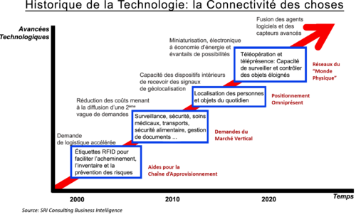
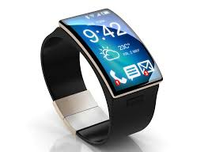

L'internet des objets ou Web 3.0 est le terme qui désigne l'ensemble des objets connectés au réseau internet.

Au début des années 2000, des ingénieurs ont commencé à ajouter des puces RFiD à des objets afin de les superviser à distance,
puis peu à peu des objets pouvant communiquer à travers la pile TCP/IP sont apparus devenant des objets connectés
Aujourd'hui, la famille des objets connectés ne cesse de grandir et comporte des objets aussi variés que les montres ou les fouchettes connectées.
Cette explosion d'objets entraine une explosion des données échangées mais aussi pose le problème de l'attribution de nouvelles adresses IP.

Véritables bijous de technologie, les montres connectées sont apparues à la fin des années 2000.
Ces objets permettent via une connection bluetooth de déporter l'écran du téléphone associé mais aussi de se connecter à internet via une connection TCP/IP ou via le réseau mobile.
Véritable ordinateur attaché au poignet, les Smartwatch permettent d'éffectuer des tâches complexes comme téléphoner ou consulter la météo.
Un système de capteurs (podomètre, accéléromètre,...) permet de s'automesurer et de comparer ses performances avec d'autres utilisateurs.